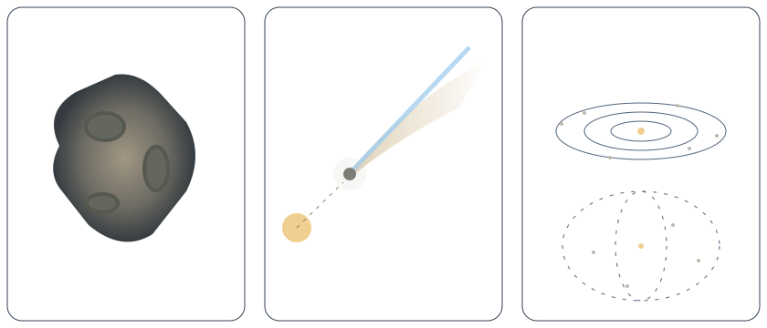

同样绕着太阳走，为什么有的是石块，有的会长出彗尾，还有的散成尘埃？

三维画面暂时不可用。这是固定示意，下面的条件、读数和解释仍可使用。
拖动旋转，双指或滚轮缩放。聚焦画面后，方向键转动，＋／－缩放，Home 重置镜头。
关掉它作对照：轨道不变，彗发和彗尾会怎样？这是条件实验，不是在给一颗真实彗星作诊断。
每次换储库都换一个合适的镜头。点是放大的定位符，数量经过抽样；实际空间十分空旷。
小行星不都是一整块坚硬石头；有些是松散碎块组成的集合。彗星也不只是一块干净的冰，通常混着尘埃和岩石。碰撞会产生碎片，彗星活动会释放尘埃。进入地球大气的部分小碎片，才可能带来我们看见的流星。
但不能把这些名字排成每个天体都会经历的固定顺序。不是每颗小行星都会变成彗星，也不是每粒尘埃都会落到地球。轨道、物质和环境共同决定后续发生什么。
小天体的形状、反射光和轨道有望远镜与探测器观测支持。本页的表面坑洼与代表点分布是原创示意，没有描摹某次观测的地形或位置。颜色帮助区分样本与尾部，不能代替光谱、密度或采样证据。
彗星轨道是已知参数的假想二体椭圆，太阳光照按距离平方反比计算。升华响应、喷流和尾部曲线是定性教学映射，没有求解传热、太阳风、尘埃粒子动力学、质量耗损或真实流星雨。拖动是取样不同条件，不是让真实升华倒流。奥尔特云采用独立结构示意；它不是拍摄到的外观，和其他画面没有共同的长度比例。